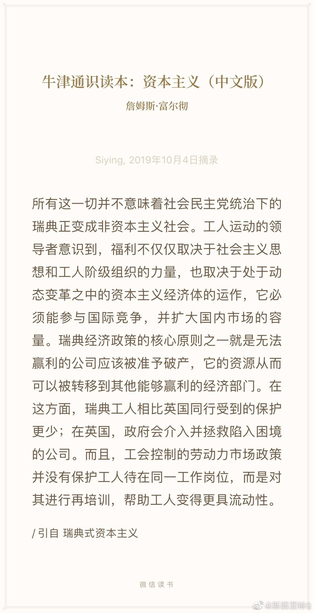

前一段时间WSJ好像还有一篇文章在说，美国人总觉得法国人是社会主义，美国人是自由市场，但由于法国等国家的反垄断搞得更严厉而美国就对垄断很纵容，其实法国很多行业比美国更有竞争性，市场更能有效运作。 
民调显示，反对弹劾特朗普的比例大约是41%（支持的比例略高一点，其他人表示不知道），正好和对特朗普的执政满意的比例（approval rate) 差不多。看来到这个时候，坚定支持不弹劾的，就是特朗普的基本盘了，那些就是即使特朗普光天化日之下谋杀一个人也会支持的死忠了。你能想象特朗普做任何事情能让他们放弃支持吗？反正我是想象不出来。